Arnab Banerjee: Indra Playback Singer
Explore the cinematic journey of Arnab Banerjee as the playback singer for the movie Indra. Behind-the-scenes moments, recording sessions, and exclusive portfolio.


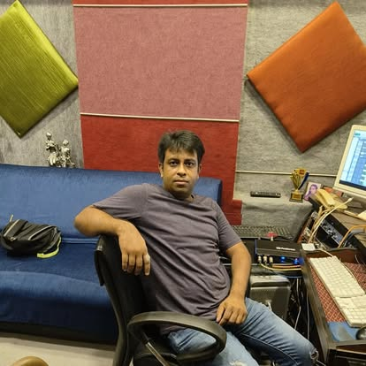


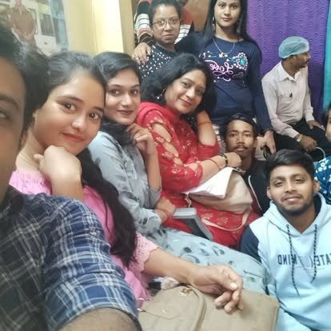
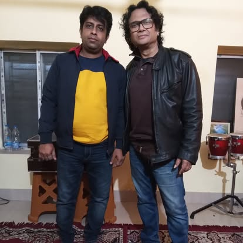

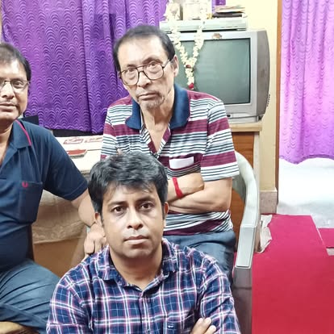
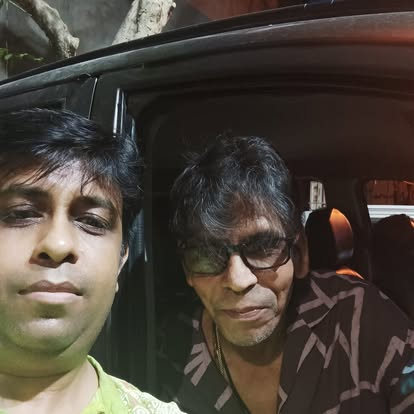
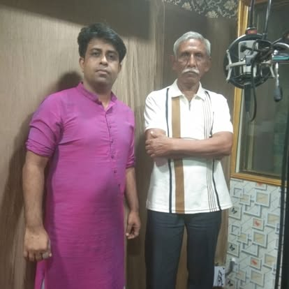
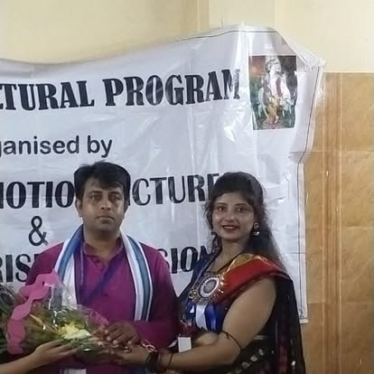

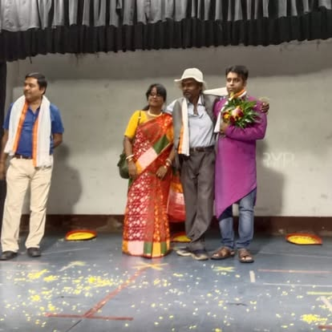

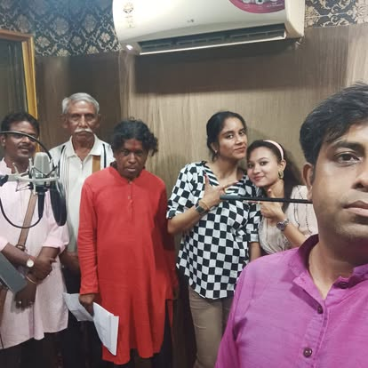

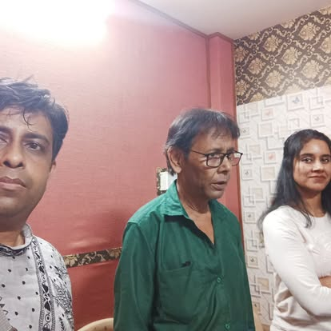
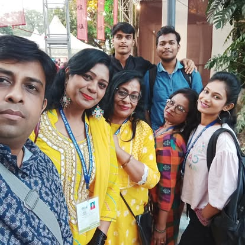
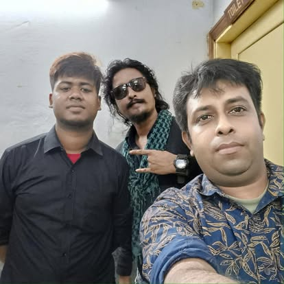